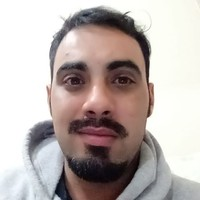

Natan Vicente

Summary
I excel in sales, possess advanced English proficiency, and have a strong commercial
understanding along with top-notch customer service skills.
With a background in food
and beverage and a solid grasp of gastronomy,
I'm transitioning to web development,
already studying front-end technologies.
Education
- High School-CEAD Potty Lazarotto (2008-2017)
Work Experience
Maitre-Edificio Palazzo Lumini
May 2023-july 2023
- Supervise the waitstaff team to ensure flawless service for both residents and clients within the condominium premises and their residences.
- Manage customer reception and escort them to tables, providing courteous and personalized service.
- Coordinate table reservations and special events, contribute to crafting the drinks and wine menu, and maintain clean and organized service areas adhering to established quality standards at Palazzo Lumini condominium.
Waiter-Edificio Palazzo Lumini
June 2022-May 2023
- Supervision and organization of mise-en-place for events and dinners, ensuring impeccable presentation.
- Coordination of table service during events, ensuring a high-quality gastronomic experience for guests.
- Effective communication and collaboration with the team to ensure exceptional and satisfactory service during coffee breaks and happy hour meetings.
Bartender-Grand Hotel Rayon
August 2018-June 2021
- Curating and crafting a diverse and appealing menu of drinks and coffees to cater to the discerning tastes of hotel guests.
- Preparing both standard and custom drinks based on the menu or specific customer requests, ensuring a high standard of quality and presentation.
- Providing exemplary customer service at the lobby bar, attending to guests, handling wine sales and service, and efficiently managing billing and closing of accounts.
]
Skills
- Exceptional interpersonal and communication skills to effectively engage with guests, understand their preferences, and provide personalized service.
- Proficiency in mixology and drink preparation, showcasing creativity and a keen understanding of different ingredients, flavors, and presentation techniques.
- Strong organizational and multitasking abilities to efficiently handle a busy bar environment, manage drink orders, and maintain a well-organized workspace while meeting customer expectations.
Awards and Certifications
- Caipirinha Master (Four Points By Sheraton Hotels-2014)
Other
Hobbies
Contact me